This document describes the basic requirements for Indic script layout and text support on the Web and in Digital Publications. These requirements provide information for Web technologies such as CSS, HTML, and SVG about how to support users of Indic scripts. The current document focuses on Devanagari, but there are plans to widen the scope to encompass additional Indian scripts as time goes on.
This document describes the basic requirements for Indic script layout and text support on the Web and in eBooks. These requirements provide information for Web technologies such as CSS, HTML and SVG about how to support users of Indic scripts. The current document focuses on Devanagari, but there are plans to widen the scope to encompass additional Indian scripts as time goes on.
If you wish to make comments regarding this document, please raise them as github issues against the latest dated version in /TR. Only send comments by email if you are unable to raise issues on github (see links below). All comments are welcome.
To make it easier to track comments, please raise separate issues or emails for each comment, and point to the section you are commenting on using a URL for the dated version of the document.
Introduction
About this document
This document describes the basic requirements for Indian Languages layout for display purpose. It discusses some of the major layout requirements in first letter pseudo-element, vertical arrangements of characters, letter spacing, text segmentation, line breaking and collation rules in Indic languages.
The current document focuses on Devanagari, but there are plans to widen the scope to encompass additional Indian scripts as time goes on.
The minimal requirements presented in this document for Indian languages text layout will also be used in E-publishing and CSS Standard. This documents covers major issues of e-content in Indian languages in order to create standardize format of text layout to address storage, rendering problems, vertical writing, letter spacing, collation, line breaking etc.
It also describes the definition of ABNF(Augmented Backus–Naur Form)
based valid segmentation-Indic orthographic syllable in order to get the proper display in the browsers. The text segmentation[[!UAX29]] and line breaking [[!UAX14]] algorithms are considered in detail. The CSS & digital publications standards will benefit from this document.
Indian language complexities
India has large linguistic diversity with 22 constitutionally recognized languages and 12 scripts.This document is currently focused on the Devanagari script. The expectation is that over time its scope will widen to cover additional major scripts from the list below.
The mapping between languages and scripts is complex. Multiple languages may have common scripts, while a language can be written in multiple scripts. Each language and script is unique in nature and cannot be easily replicated, even if they share common characteristics. The orthographic changes may also occur in some languages and adoption of new orthography is a gradual process, thus posing additional challenges.
Serial No.
Language
Script
1
Hindi
Devanagari
2
Sanskrit
Devanagari
3
Marathi
Devanagari
4
Konkani
Devanagari
5
Nepali
Devanagari
6
Maithili
Devanagari
7
Sindhi
Devanagari, Perso-Arabic
8
Bodo
Devanagari
9
Dogri
Devanagari
10
Bengali
Bengali
11
Assamese
Bengali
12
Manipuri
Bengali, Meetei (Mayak)
13
Gujarati
Gujarati
14
Kannada
Kannada
15
Malayalam
Malayalam
16
Odia
Odia
17
Punjabi
Gurmukhi
18
Tamil
Tamil
19
Telugu
Telugu
20
Urdu
Perso-Arabic
21
Santhali
Ol-Chiki, Devanagari
22
Kashmiri
Devanagari, Perso-Arabic
The scripts of South Asia share so many common features that a side-by-side comparison
of a few will often reveal structural similarities even in the modern letter forms. They are all
abugidas in which most symbols stand for a consonant plus an inherent vowel (usually the sound /a/).The North Indian branch of scripts was, like Brahmi itself, mainly used to write Indo-European languages such as Pali and Sanskrit, and eventually the Hindi, Bengali, and Gujarati
languages, though it was also the source for scripts for non-Indo-European languages such
as Tibetan, Mongolian, and Lepcha. The South Indian scripts are also derived from Brahmi and, therefore, share many similarities in structural characteristics. For more details visit [[!South-Asian-Scripts]].
The following figure shows the evolution of Indian scripts over a period of times from Brahmi script.
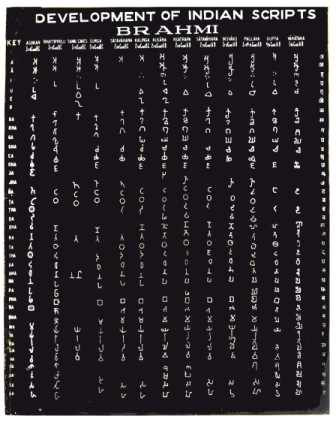
Development of Indian Scripts
For more details visit [[!Evolution-of-Indic-Scripts]]
Basic components of Indian languages
Unicode & CLDR
Unicode is the Universal character encoding standard, used for representing text for information processing. Unicode encodes all of the individual characters used for all the written languages of the world. The standards provide information about the character and their use.
Common Locale Data Repository is the largest standard repository of locale data in the world. It is managed by Unicode Consortium. It provides locale data in an XML format for use in computer applications. It facilitates locale-related information sharing among applications regardless of their domains. Its goal is to provide basic linguistic information for diverse “locales” in an open, interoperable form.
This data is usable for localizing applications.
Some examples of the information that CLDR gathers for languages and territories are:
Date formats
Time Zones
Number formats
Currency and its formats
Measurement Systems
Collation (Sort order) Specification: Sorting, Searching and Matching
Translations of names for language, territory, script, time zones, currencies
Script and exemplar characters used by a language
Calendaring rules, Formats and important dates.
Reference URL: [[!CLDR]]
Unicode Normalization
Unicode normalization[[!UAX15]] is a form of text normalization that transforms equivalent sequences of characters into the same representation. Unicode normalization is important in Unicode text processing applications, because it affects the semantics of comparing, searching, and sorting Unicode sequences
When a unique representation is required , a normalized form of Unicode text can be used to eliminate unwanted distinctions. The key part of normalization is to provide a unique canonical order for visually non distinct sequences of combining characters.
Canonical & Compatible Equivalence
Unicode contains numerous characters to maintain compatibility with existing standards, some of which are functionally equivalent to other characters or sequences of characters. Because of this, Unicode defines some code point sequences as equivalent. Unicode provides two notions of equivalence: canonical and compatible.
Canonical equivalence is a form of equivalence that preserves visually and functionally equivalent characters.
The following figure shows the canonical equivalence:
The following Unicode Character Code chart as per The Unicode Standard, Version 7.0 :
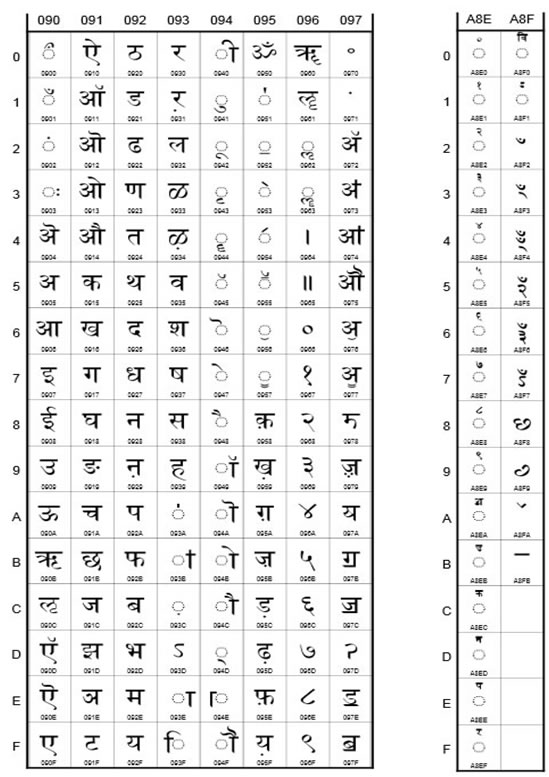
Unicode Devanagari and Devanagari extended Code Chart
The Unicode code charts for other Indic scripts are available at [[!Code-Charts]]
Character Set for Hindi
This section provides the basic alphabetic system of Devanagari Script as used for Hindi Consonants, Vowels, Modifiers, Matras, Halant, Nukta etc.
Consonant set
क
क़
ख
ख़
ग
ग़
घ
ङ
च
छ
ज
ज़
झ
ञ
ट
ठ
ड
ड़
ढ
ढ़
ण
त
थ
द
ध
न
प
फ
फ़
ब
भ
म
य
र
ल
व
श
ष
स
ह
Vowel set
अ
आ
इ
ई
उ
ऊ
ऋ
ए
ऍ
ऐ
ओ
ऑ
औ
Modifiers
ं - Anuswara
Anuswara, an archinasal, is denoted by a dot above the letter after which it is to be pronounced.
This falls under Nasal category.
ँ -Chandrabindu
Candrabindu is pure nasalization as air comes from the nose. It is denoted by a breve with a dot superposed above the letter after which it is to be pronounced. This falls under Nasal category.
ः - Visarga
Visarga(sending forth), denoted by two dots placed one above the other.
ऽ - Avagraha
For extra length with long vowels as seen in the Sanskrit text
Matras
ा
ि
ी
ु
ू
ृ
े
ॅ
ै
ो
ॉ
ौ
Halant(्)
Halant is used in most writing system to signify the lack of inherent vowel.
It is also called virama by Unicode.
Nukta(़)
Nukta is used in Hindi
For more information See [[!Draft-Script-Grammar]]
Indic orthographic syllable boundaries(ABNF Valid segmentation-Proposed solution for layout issues in Indian languages)
Need for ABNF valid segmentation
ABNF Valid Segmentation based Indic orthographic syllable definition is provided here for correct and standardized representation of Indian languages layout. This will address various issues mentioned in the following sections.
This definition will be useful in order to get the uniform display of Indic layout in the browsers, applications, Digital publishing etc.
ABNF based definition of Indic orthographic syllable
Augmented Backus–Naur Form (ABNF) is a meta-language based on Backus–Naur Form (BNF), but consisting of its own syntax and derivation rules. The motive principle for ABNF is to describe a formal system of a language to be used as a bidirectional communications protocol.
V[m] |{CH}C[v][m]|CH
The linguistic definition of Indic orthographic syllable has been mapped to ABNF(Augmented Backus–Naur Form) for the purpose of text segmentation, line breaking , drop letter, letter spacing in horizontal text and vertical text representation. The definition has been elaborated , taking Hindi as an example.
The definition is a combination of 3 rules :
Rule 1 : V[m]
Rule 2 : {CH}C[v][m]
Rule 3 : CH (This rule is applicable only at the end of the word)
V(upper case) is independent vowel
m is modifier(Anusvara/Visarga/Chandrabindu)
C is a consonant which may or may not include a single nukta
v (lower case) is any dependent vowel or vowel sign (mātrā)
H is halant / virama
| is a rule separator
[ ] - The enclosed items is optional under this bracket
{} - The enclosed item/items occurs zero or repeated multiple times
Various Use cases of ABNF based Indic orthographic syllable definition for Hindi language as example
Rule 1 : V[m]
Sl. No.
Examples
Definition
1
अ, ई, उ
V (Vowel) is a syllable
2
अं, उँ, आः
V+ Modifier is a syllable
Rule 2 : {CH}C[v][m]
Sl. No.
Examples
Definition
1
र, क, ज, ल, म
Consonant is a syllable
2
प्प, क्ख,च्त, ज्ज्व, त्क्ल, त्स्न
Zero or more Consonant + Virama sequences followed by consonant is a syllable
3
र्त, र्त्स, र्त्स्न, र्त्स्न्य, फ़्क़
Zero or more Consonant (Nukta) +Virama followed by consonant is a syllable
4
र्ता, र्त्स्न्या, फ़्जी, क्या
Zero or more consonant+ (Nukta)+ virāma sequences followed by a consonant (+Nukta) followed by a vowel sign is a syllable
5
तः,स्तं, स्त्रँ, स्तः, फ़्ज़ँ
zero or more consonant+ (Nukta)+ virāma sequences followed by a consonant (+Nukta) followed by modifier is a syllable
6
र्त्स्न्या: त्स्न्युं, त्स्न्युँ, फ़्ज़ें,हिं
zero or more consonant+ (Nukta)+ virāma sequences followed by a consonant (+Nukta) followed by a vowel sign and modifier is a syllable
7
स्थि, ज्जि, ख्वा
Zero or more Consonant +halant sequences followed by a consonant and vowel sign is a syllable
Rule 3 : CH
त्,व्, म्, भ् etc are syllable in Hindi only at the end of the word
Examples of combination of the rules :
1. स्वागतम् - CHCv + C + C + CH has following syllables :
स्वा
CHCv
ग
C
त
C
म्
CH
2. भरतनाट्यम- C + C + C + Cv + CHC + C
भ
C
र
C
त
C
ना
Cv
ट्य
CHC
म
C
Text segmentation
A string of Unicode-encoded text often needs to be broken up into text elements programmatically. Common examples of text elements include what users think of as characters, words, lines (more precisely, where line breaks are allowed), and sentences. The precise determination of text elements may vary according to orthographic conventions for a given script or language. The goal of matching user perceptions cannot always be met exactly because the text alone does not always contain enough information to unambiguously decide boundaries. For example, the period (U+002E FULL STOP) is used ambiguously, sometimes for end-of-sentence purposes, sometimes for abbreviations, and sometimes for numbers. In most cases, however, programmatic text boundaries can match user perceptions quite closely, although sometimes the best that can be done is not to surprise the user. Word boundaries are used in a number of different contexts. The most familiar ones are selection (double-click mouse selection, or “move to next word” control-arrow keys), and “Whole Word Search” for search and replace. They are also used in database queries, to determine whether elements are within a certain number of words of one another .
Some special sentence boundaries like the double poorna virama, possibly with numbers (as in Sanskrit text, shlokas etc.) Grapheme cluster boundaries are important for collation, regular expressions, UI interactions (such as mouse selection, arrow key movement, backspacing), segmentation for vertical text, identification of boundaries for Initial-letter styling, and counting “character” positions within text. [[!UAX29]]
Solution for word boundaries:
User-percieved characters boundaries should be based on tailored Grapheme Cluster Boundaries to conform Indic orthographic syllable definition
In case of Devanagari phrase separator called Danda or purnaviram (।) and double danda (।।: used to mark end of the verse),In some of the browsers ending word is selected with purnaviram on double-click while in some browsers Danda is selected as a separate. It is recommended that line should not begin with purnaviram/Danda and double danda. So the properties of Danda should be same as the properties of FullStop or other punctuation marks so that new line should not begin with Danda and double danda.
For others characters, the text segmentation should be done as Indic orthographic syllable.
Indic script behavior in initial letter styling is based on syllables, rather than individual letter forms.
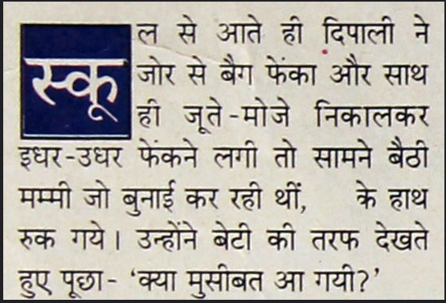
The above Figure shows an example of a drop intial in Hindi. In the first word of the paragraph, स्कूल ('skūl'), the sequence of characters is stored in memory is as follows:
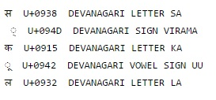
There are two syllables in this word: SA+VIRAMA+KA+UU and LA. Note, however, that there are three Unicode grapheme clusters here: SA+VIRAMA, KA+UU and LA.
Styling is done on the basis of the whole orthographic syllable, not the first character, nor even the first grapheme.
A syllable includes a base consonant and any combination of the following characters in the text stream:
sequences of consonants preceded by virama (i.e. conjuncts).
vowel signs
visarga, anusvara or candrabindu.
Line breaking
When inline-level content is laid out into lines, it is broken across line boxes. Such a break is called a line break. In most writing systems, in the absence of hyphenation a line break occurs only at word boundaries. Many writing systems use spaces or punctuation to explicitly separate words, and line break opportunities can be identified by these characters. Line breaking, also known as word wrapping, is the process of breaking a section of text into lines such that it will fit in the available width of a page, window or other display area.
Hyphenation
There are different cases of hyphenation, some of the cases are given below :
Case 1 : Hyphens are commonly used in Copulative compounds words in Hindi language. Hindi has both prefixes and suffixes which are joined to words with a hyphen.
नर- नारी, लाभ- हानि, माता-पिता, ऊंच - नीच
Case 2: Single word can breaks at the end of the line at Indic orthographic syllable level using hyphen
In the below screenshot, words आकर्षण and विज्ञापन not follow Indic orthographic syllable definition in some of the browsers.
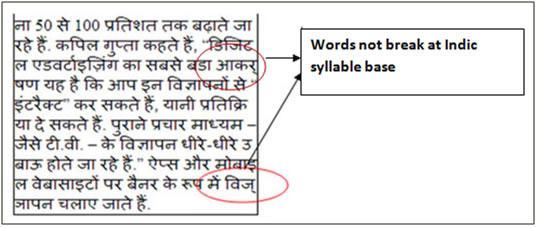
Guiding principles of Line breaking for Indian languages
In Indic writing system , it is preferred that line breaks at word boundaries ,if required following principles may be adhered :
Rule 1: New line cannot begin with following symbols/Punctuation marks. Also these should be retain with the associated text
Closing brackets
Devanagari Danda /Purnaviram
Commas
Visarga
Decimal symbols
Semicolon
Repetition of punctuation marks such as semicolon with closing brackets, Semicolon with single/ Double quotes , Closing brackets with commas/Semicolon etc
Mathematical operators
Rule 2: The definition of Indic orthographic syllable may be used to break the line and a hyphen should be at the breaking point so that word can be read intuitively
Rule 3: The hyphenated words can be broken at the hyphen e.g.:
नर-नारी should be treated as:
नर- on the first line and नारी on the next line
Rule 4: Expression with mathematical symbol should be treated as single unit so that at the end of the line expression should not breaks at operator level
Rule 5: Breaking should not be allowed at numerical values such as currency values, year etc. e.g.
“100.00” or “10,000”, nor in “12:59”
Requirements for Indic Layout
Initial letter styling
Drop initial is a typographic effect emphasizing the initial letter(s) of a block element with a presentation similar to a 'floated' element.
Selecting initial letters
The drop initial letter in Indic scripts must be selected on the basis of orthographic syllables, rather than individual letter forms (see an example at the end of section 3, Text segmentation). A detailed definition of Indic syllables can be found in section 2, Indic Syllable boundaries.In Indian languages the size of the Initial Letter is determined by the number of the lines between top line of the syllable and lowest bit in the orthographic Indic syllable cluster where subjoined consonant and other diacritics appears.
Typical drop initial usage in Indic scripts
Most of the Indic drop initial letters in magazines and newspapers use 2 to 4 line drops. Some examples are shown below.
Examples of Indic Initial letters
In examples of this kind, reference points on the drop cap must align precisely with reference points in the text. In Indic scripts the top reference point is the hanging base line for those scripts that have one, and the bottom alignment point is the text after -edge.
Alignment of the top line of the non-highlighted characters is at the top of the thicker top line of the initial letter is commonly used in India.In some examples top lines of the initial letter and the following letters don't touch. This is due to variable technology/formats used by the publishers. It is preferred that both the top lines of Initial letter and neighbouring text should touch.
Here are some additional examples of initial highlighted letter and drop letter based on the Indic syllable definition. In Devanagari the hanging baseline may be preferred as an alignment point. In that case the primary connection point connects the text-after-edge of the initial letter with the text-after-edge of the nth line, but the secondary connection point connects the hanging baselines of the initial letter and the initial line. The drop initial effect may also be used for writing systems which use different alignment strategies.
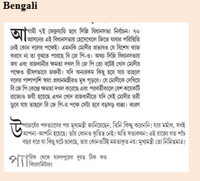
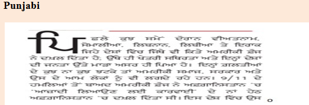
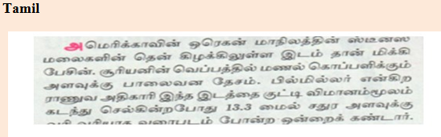
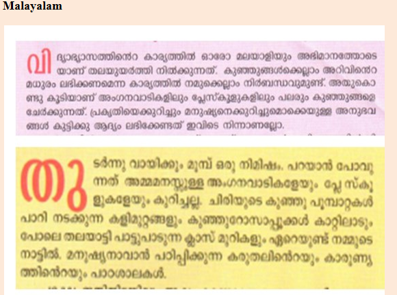
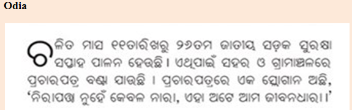
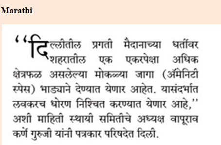
The remainder of this section describes the detailed rules for placement and alignment of hindi characters with initial letter styling relative to the adjacent text.
Indic scripts with hanging baseline
Indian languages which use hanging baseline such as Hindi, Bengali, Gujarati, Marathi, Punjabi etc.
The part from the hanging baseline and the ascent of the Initial letter may follow the following mechanism :
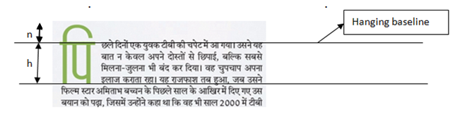
Rule of Indic script with hanging baseline
Scripts that have hanging baseline , the hanging baseline of both Initial letter and first line of text should be same aligned.
Scripts that don't have hanging baseline such as Kannada, Tamil, Telugu, Malayalam , Odia etc
The publishers in India commonly used following rules for such scripts :
The height of the Initial letter is based on the Indic orthographic syllable described in section 2.
Ascent of the first non highlighted line is equal t o the median/mean line of the Initial letter as shown below :
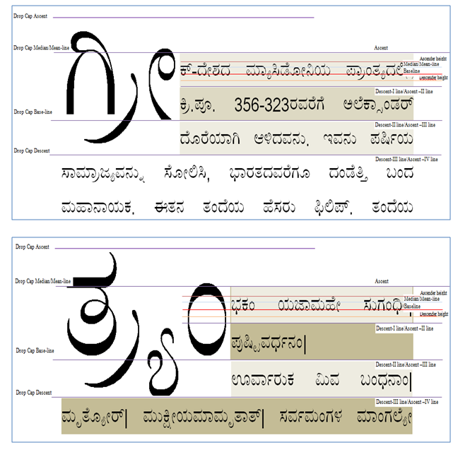
Based on above observations the general rule for South Indian languages Indian languages scripts will be :
¼ height of the total Drop Cap Height projected or ascended above the ascent of the first-line
¾ of the total Drop Cap Height occupied or descended from ascent of first line or X1 to descent of the last line or line XN.
Initial Letter box formatting in Indian languages
The Indian publishers commonly used different height of the boxes and sizes of the characters. But it is proposed that the syllable with in the box is centre-aligned with reference to box parameters as shown in the figure below :
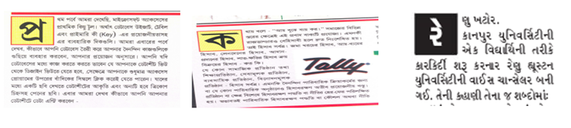
Examples of Indic Initial letters within box
Letter Spacing
In styling issues like horizontal spacing, the spacing between characters like C E R T I F I C A T E, the space is given between the every character in case of English. But in case of Indian language, the space needs to be introduced after each syllable for correct representation.
For letter spacing in Indian languages it is recommended that spacing should follow Indic orthographic syllable definition.
Here is the some examples of letter spacing that based on definition :
अं त र्रा ष्ट्री य क र ण
स्वा ग त म्
सु स ज्जि त
स म्प्र ति
Vertical arrangements of characters
In vertical arrangement of characters writing each character on a new line may not be suitable in Indian languages. The vertical arrangements of characters are sometimes used in Indian texts. In order to form correct arrangements, it is preferred to follow tailored grapheme cluster approach.
Variations of vertical arrangement of the characters in Hindi is represent below :
Variations in vertical arrangements
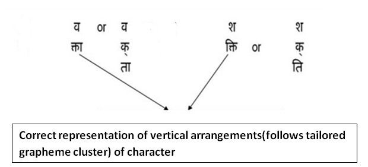
Variations in vertical arrangements
Vertical representation of the word 'स्वागतम्' based on Indic orthographic syllable definition:
स्वा
ग
त
म्
Collation
Collation is one of the most important features for Indic languages . It determines the order in which a given culture indexes its characters. This is best seen in a dictionary sorting order where for easy search words are sorted and arranged in a specific order. Within a given script, each allo-script may have a different sort-order. Thus in Hindi the conjunct glyph क्ष is sorted along with क , since the first letter of that conjunct is क and on a similar principle ज्ञ is sorted along with ज . The same is not the case with Marathi and Nepali which admit a different sort order.
Different scripts admit different sort orders and for all high
end NLP applications. Sorting is
a crucial feature to ensure that the applications index data as per the cultural perception of
that community. In quite a few States, sort order is clearly defined by the statutory bodies
of that state and hence it is crucial that such sort order be ascertained and introduced in
the document
.
The order(left to right) as given below is pertinent to sorting by a computer program and is compliant
with CLDR as laid down by Unicode.